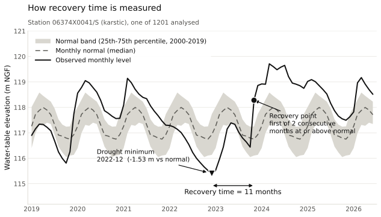
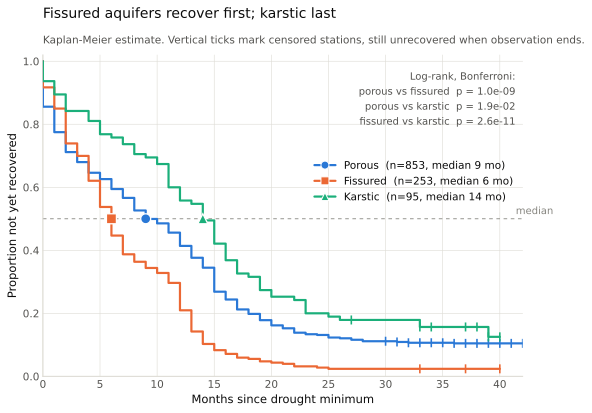
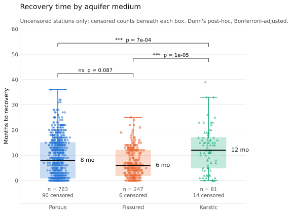
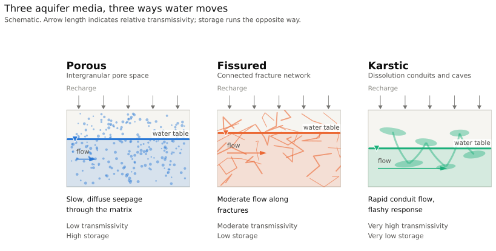
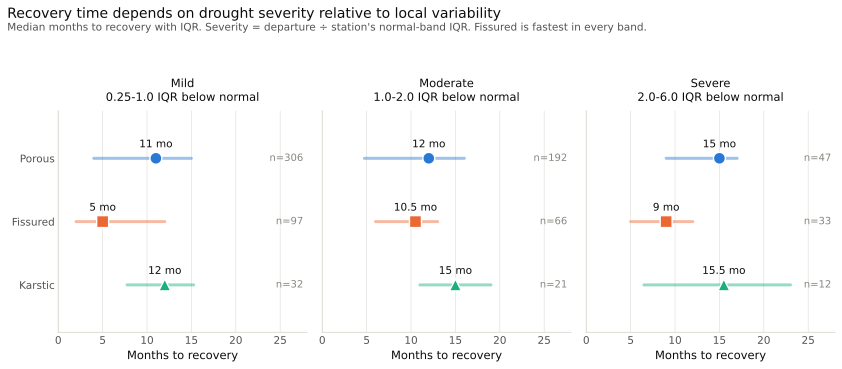

Aquifer Memory: Groundwater Recovery from the 2022 European Drought across French Aquifer Types
Fissured aquifers recovered fastest regardless of drought severity; recovery time governed primarily by drought depth, not aquifer medium alone
Introduction
The 2022 European drought drove groundwater levels to historic lows across France. How quickly aquifers recover depends on their hydraulic properties — transmissivity, storage coefficient, and recharge mechanism — but empirical comparison of recovery rates across aquifer types at national scale is limited. We analyse 1,201 piezometers from the French national monitoring network, classified by aquifer medium (porous, fissured, karstic) using the BDLISA v3 reference system, to test whether medium predicts recovery time from the 2022 drought minimum.
Data & Methods
Piezometric time series from Hub’Eau Piézométrie API; aquifer classification from BDLISA v3 via Sandre. Monthly normals computed over a 2000–2019 reference period. Recovery: first month after the drought minimum (Jun 2022–Mar 2023) where the water table returns to or exceeds its monthly normal for two consecutive months. Stations not recovered by December 2025 are right-censored. Primary test: Kaplan-Meier survival analysis with pairwise log-rank tests (Bonferroni-corrected). Secondary: Kruskal-Wallis H-test with Dunn’s post-hoc. Confound control: depth-matched comparison with severity standardised by each station’s normal-band IQR.





Results
Pooled median recovery: fissured 6 months, porous 8, karstic 12 (all pairwise log-rank p < 0.02). Within severity-matched strata, fissured is fastest in every band (Kruskal-Wallis p < 0.05). No ranking reversal when severity is standardised by station variability. 110 stations (9%) had not recovered by December 2025 — disproportionately karstic and deep-drawdown.


Discussion
Fissured aquifers’ rapid recovery is consistent with moderate transmissivity and distributed fracture-network recharge — responsive to rainfall, with sufficient storage to sustain recovery. Karstic systems recovered slowest despite high transmissivity, likely because conduit drainage depletes storage rapidly and recovery requires sustained regional recharge. Drought severity is the primary predictor of recovery time, but fissured aquifers outperform in every severity band, suggesting medium exerts an independent effect. Limitations include uncontrolled pumping influence, a single drought event, and small karstic sample sizes at high severity (n=12 uncensored).
Conclusions
Aquifer medium significantly predicts drought recovery time across all severity strata. Fissured aquifers are the most resilient to drought; 9% of the French monitoring network remains below pre-drought normals more than three years after the 2022 event. These results can inform groundwater drought early-warning frameworks and aquifer vulnerability mapping.
References
- Toreti, A. et al. (2022). Drought in Europe August 2022. JRC Technical Report.
- BRGM (2018). BDLISA v3: Base de Données des Limites des Systèmes Aquifères.
- Hub’Eau Piézométrie API. https://hubeau.eaufrance.fr/
- Kaplan, E.L. & Meier, P. (1958). Nonparametric estimation from incomplete observations. JASA, 53(282), 457–481.